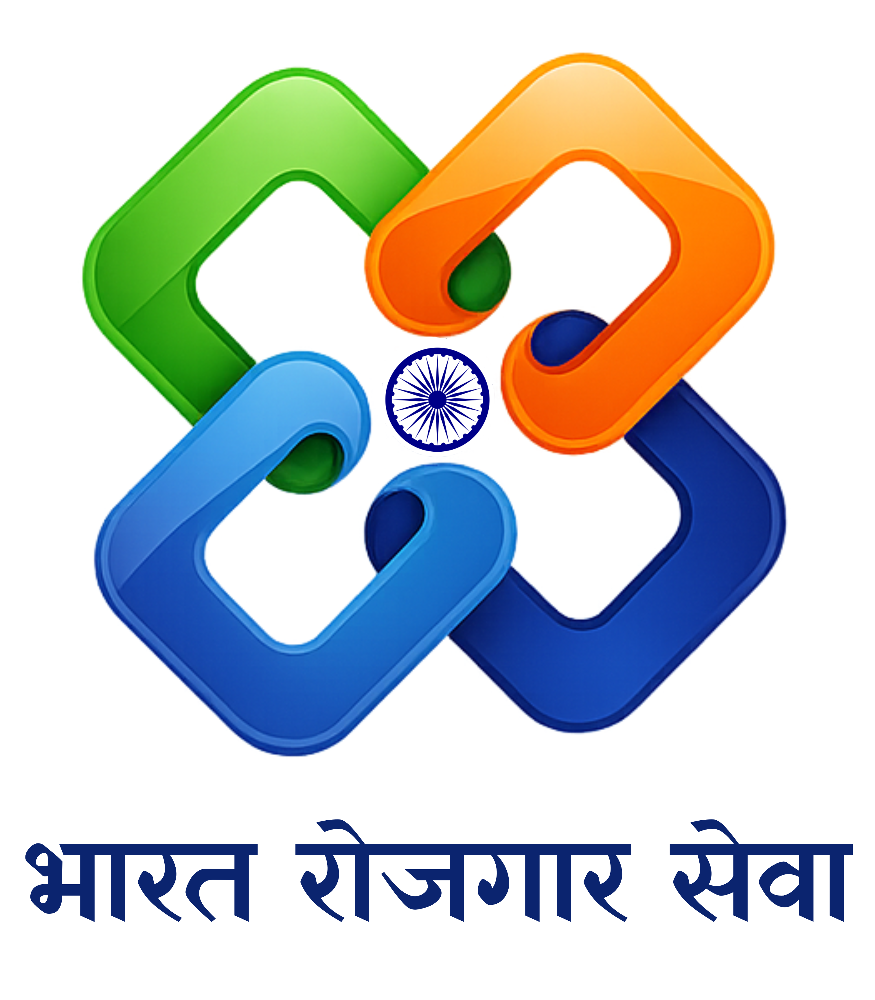
Cari Kerja & Rekrut Pekerja di Seluruh India
Connecting Work and Workforce – Simple. Local. National. Global.
Bharat Rojgar Sewa adalah platform pencocokan kerja yang mengutamakan WhatsApp untuk pekerja informal, blue-collar, grey-collar, dan gig di India. Kami mendukung perekrutan yang cepat, tepercaya, dan multibahasa melalui profil terverifikasi Aadhaar, polisi, dan sertifikat karakter. Pencari kerja dan pemberi kerja dapat terhubung dalam hitungan detik melalui pesan teks atau suara dalam lebih dari 15 bahasa.
Kirim pesan → Dapatkan koneksi kerja.
Jangkauan kami di berbagai kota di India
Contoh verifikasi
Contoh WhatsApp nyata yang menunjukkan lencana verifikasi Aadhaar untuk pemberi kerja dan kandidat.
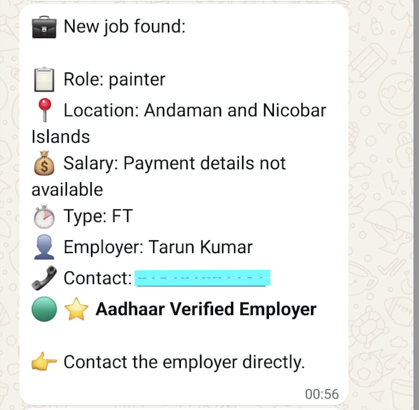
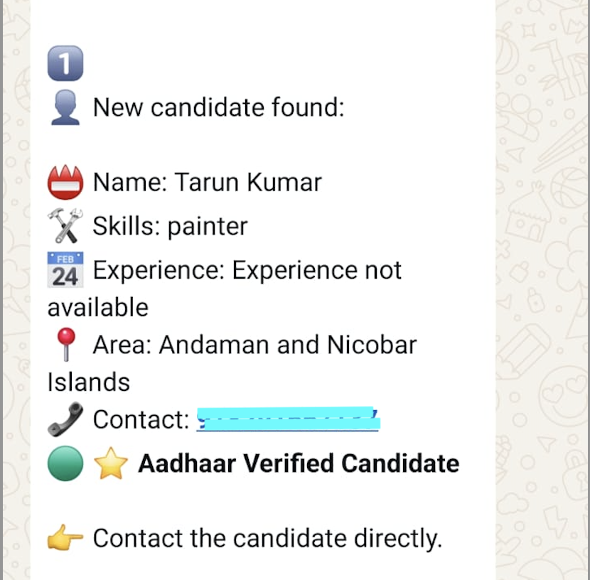
Angka kami berbicara
Platform ketenagakerjaan yang berkembang pesat di India
Mengapa memilih Bharat Rojgar Sewa?
Solusi kerja yang mudah, cepat, dan tepercaya melalui WhatsApp.
Mudah lewat WhatsApp
Tidak perlu mengunduh aplikasi. Kirim pesan teks atau pesan suara melalui WhatsApp.
Suara dan teks
Berkomunikasi dengan teks atau suara dalam lebih dari 15 bahasa.
Pencocokan cerdas
Teknologi pencocokan membantu menghubungkan kandidat yang sesuai dengan lowongan kerja.
Terhubung dengan cepat
Buat profil dan temukan koneksi kerja dalam hitungan detik.
Terhubung langsung
Kandidat dan pemberi kerja terhubung secara langsung dengan transparan.
Biaya terjangkau
Lima koneksi pertama gratis, lalu ₹5 per koneksi.
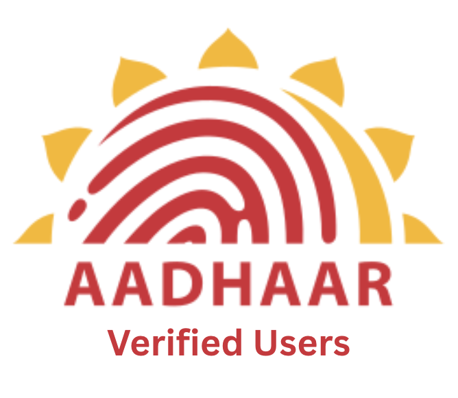
Verifikasi Aadhaar
Profil dapat diverifikasi melalui Aadhaar dan DigiLocker untuk membantu membangun kepercayaan.
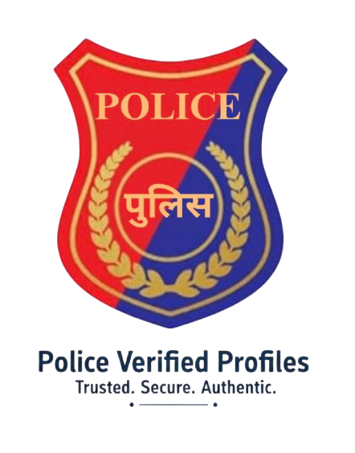
Verifikasi polisi
Verifikasi polisi setempat membantu meningkatkan keamanan dan keandalan.
Bagaimana cara kerjanya?
Mulai dengan dua langkah sederhana.
Untuk pencari kerja: kirim pesan WhatsApp
Sampaikan nama, keterampilan, dan kota Anda melalui pesan teks atau suara.
Dapatkan koneksi kerja
Profil Anda dibuat dan dihubungkan dengan pemberi kerja yang sesuai.
Untuk pemberi kerja: bagikan lowongan
Kirim deskripsi singkat yang mencakup posisi, gaji, dan lokasi.
Temukan kandidat yang sesuai
Kami mencocokkan lowongan dengan kandidat dan mengirimkan koneksi melalui WhatsApp.
Visi & Misi Kami untuk Uttar Pradesh 2031
Visi kami adalah menjadikan Uttar Pradesh pusat global bagi tenaga kerja terampil blue-collar, grey-collar, dan gig, sekaligus membuka peluang karier yang lebih baik dekat dengan rumah.
Misi kami: mengembangkan potensi menjadi keahlian
Kami menghubungkan pekerja dengan pembelajaran praktis, multibahasa, dan sesuai kebutuhan pekerjaan serta kebutuhan nyata pemberi kerja.
Melalui jaringan kandidat dan WhatsApp, Bharat Rojgar Sewa membantu pekerja mengakses materi belajar dari konten orisinal dan dunia nyata, konten yang dihasilkan AI, maupun penyedia pihak ketiga.
Langkah untuk mewujudkan misi
- Menyelaraskan pembelajaran praktis dengan kebutuhan pemberi kerja dan kesenjangan keterampilan nyata.
- Menyediakan konten singkat dan mudah diakses dalam berbagai bahasa.
- Bekerja sama dengan pemberi kerja dan mitra pelatihan untuk menilai keterampilan dan kesiapan kerja.
- Memantau pembelajaran, penilaian, penempatan kerja, perkembangan upah, dan retensi.
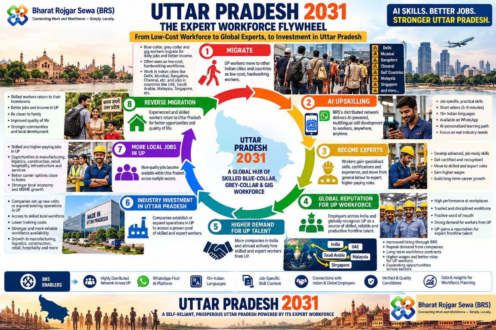
Delapan tahap siklus tenaga kerja
- 01
Perpindahan pekerja
Pekerja berpindah ke kota dan negara lain untuk bekerja sebagai tenaga kerja yang terjangkau dan rajin.
- 02
Peningkatan keterampilan sesuai pekerjaan
Pekerja mengakses pembelajaran multibahasa dari sumber konten yang sesuai.
- 03
Tenaga kerja ahli
Keterampilan praktis membuka jalan menuju peran khusus dengan nilai lebih tinggi.
- 04
Reputasi global
Keberhasilan membangun pengakuan bagi pekerja dari Uttar Pradesh.
- 05
Permintaan perekrutan meningkat
Lebih banyak pemberi kerja mencari pekerja terampil dari negara bagian ini.
- 06
Investasi industri
Ketersediaan tenaga ahli mendorong perusahaan untuk membangun atau mengembangkan operasi di Uttar Pradesh.
- 07
Lebih banyak pekerjaan lokal
Investasi industri memperluas peluang kerja berkualitas yang lebih dekat dengan rumah.
- 08
Migrasi kembali
Peluang lokal mendorong pekerja berpengalaman untuk kembali atau tetap dekat dengan rumah.
Ini adalah visi jangka panjang kami untuk Uttar Pradesh yang kami wujudkan bersama pekerja, pemberi kerja, dan mitra pelatihan.
Mitra perusahaan kami
Kami bekerja sama dengan pemberi kerja dan perusahaan tenaga kerja di India.
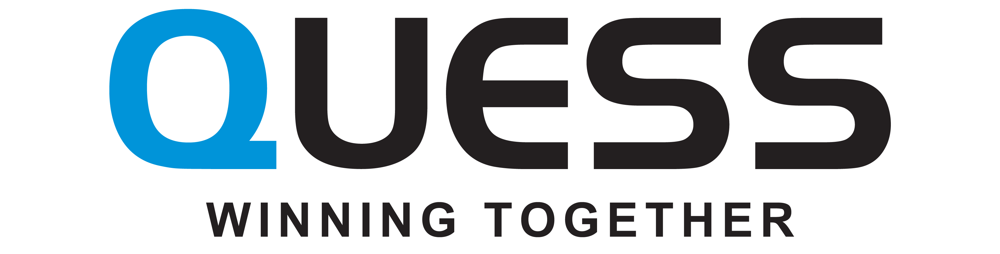
Quess Corp
Perusahaan penyedia tenaga kerja terbesar di India.
Airtel
Perusahaan telekomunikasi dengan kebutuhan perekrutan besar di bidang ritel dan layanan pelanggan di seluruh India.
DMart
Jaringan ritel yang terus merekrut staf operasional toko dan gudang.
Adani
Grup perusahaan dengan beragam kebutuhan tenaga kerja di bidang logistik, pelabuhan, dan operasional.
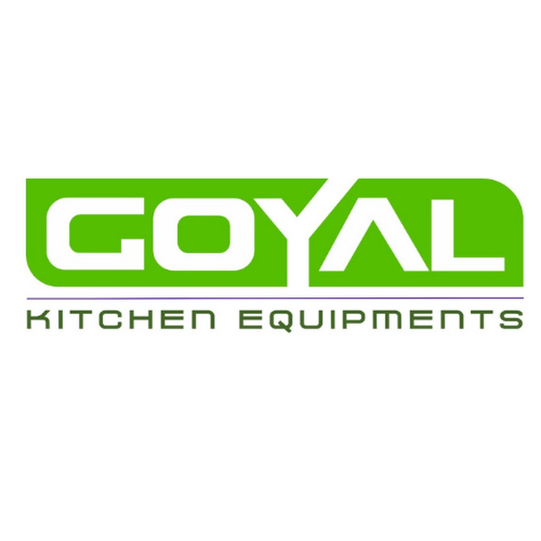
Goyal Kitchens
Perusahaan makanan dan minuman dengan kebutuhan rutin untuk staf dapur dan layanan.
Iron Mountain
Operator pusat data dan logistik yang membutuhkan staf gudang dan fasilitas.
Samsung
Produsen elektronik dengan kebutuhan tenaga kerja blue-collar yang besar.
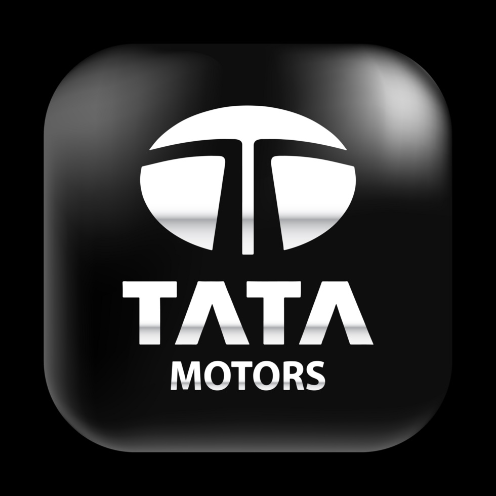
Tata Motors
Perusahaan otomotif dengan kebutuhan perekrutan di bidang manufaktur dan logistik.
ICS Foods
Layanan katering korporat dan industri.
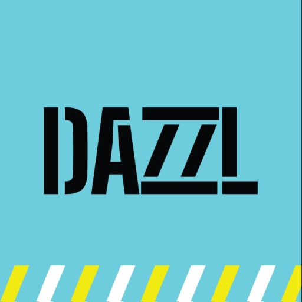
Dazzl Now
Layanan kecantikan yang tersedia di rumah dalam 10 menit.
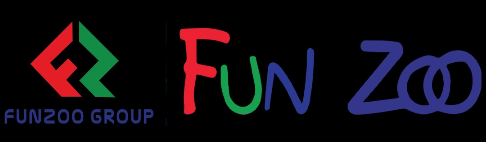
Fun Zoo Toys
Produsen dan eksportir mainan lunak tepercaya sejak 1979.
Dolar Gold Belts
Produsen sabuk industri dan kain bersertifikasi ISO sejak 1988, dengan jangkauan ekspor.
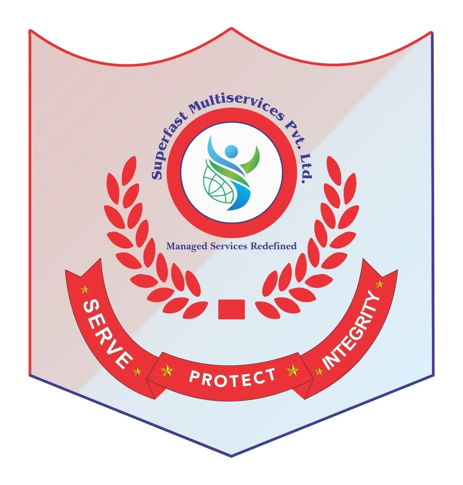
Superfast Multiservices
Layanan keamanan, tenaga kerja, penggajian, dan manajemen fasilitas.
TRUWORKX
Mitra tenaga kerja profesional untuk keamanan dan kebersihan.
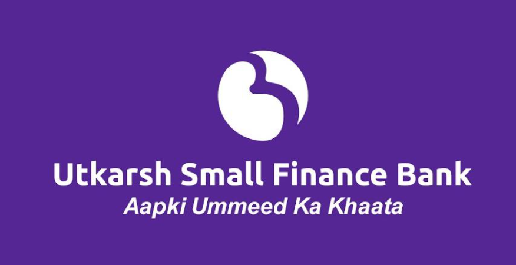
Utkarsh Finance
Mitra layanan perbankan dan keuangan.
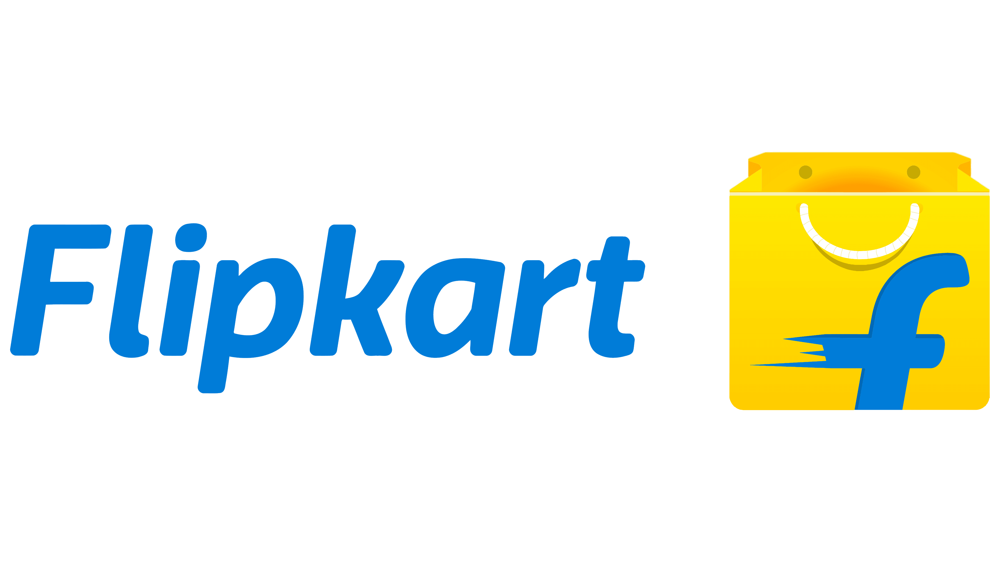
Flipkart
Pemimpin e-commerce dengan kebutuhan perekrutan besar di bidang logistik dan operasional.
Kenali tim kami
Dipimpin para profesional berpengalaman yang berkomitmen menghubungkan tenaga kerja India.
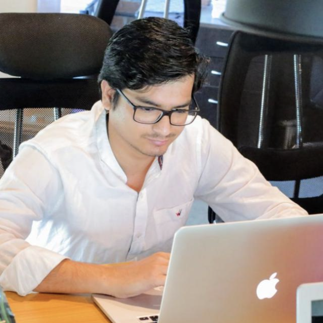
Tarun Kumar
Alumnus IIT (ISM) Dhanbad angkatan 2007 dengan pengalaman kepemimpinan bisnis. Perjalanan profesionalnya mencakup kontribusi di berbagai perusahaan rintisan dan perusahaan ternama seperti Upstox, Hindustan Times, Gojek, dan Samsung. Tarun berfokus pada kebutuhan pelanggan dan solusi yang disesuaikan.
Lihat profil LinkedIn →Serjesh Sharma
Pemimpin ML dan rekayasa data berpengalaman dengan lebih dari 15 tahun di bidang MLOps, NLP, dan visi komputer. Saat ini menjabat Supervisor, ADAS MLOps di Ford Motor Company.
Lihat profil LinkedIn →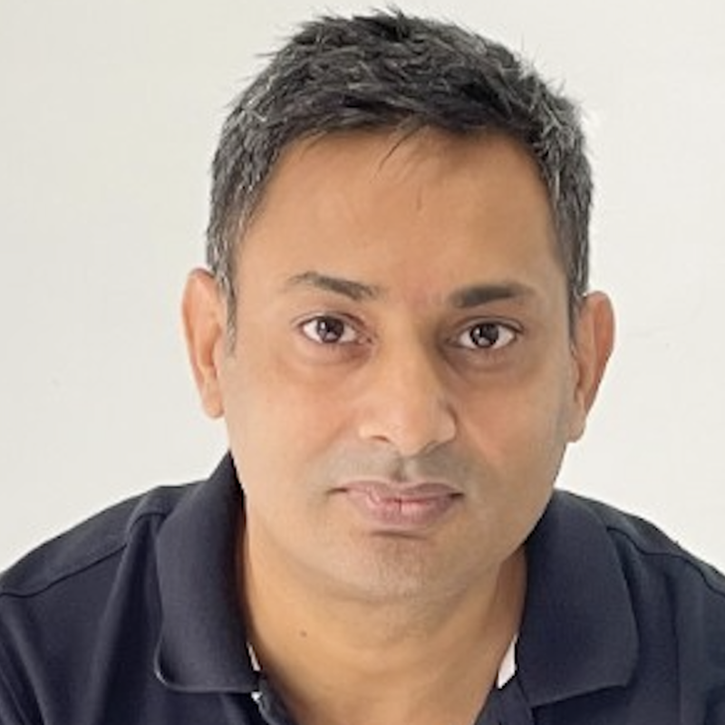
Kunal Abhishek
Memiliki pengalaman lebih dari 20 tahun dalam peran kepemimpinan di perusahaan rintisan dan korporasi besar. Ia ikut mendirikan Stargate (BoStreet) dan Native5, serta pernah memegang posisi kepemimpinan di Paytm dan Myntra. Keahliannya mencakup pengembangan tim, inovasi produk, dan strategi pertumbuhan.
Lihat profil LinkedIn →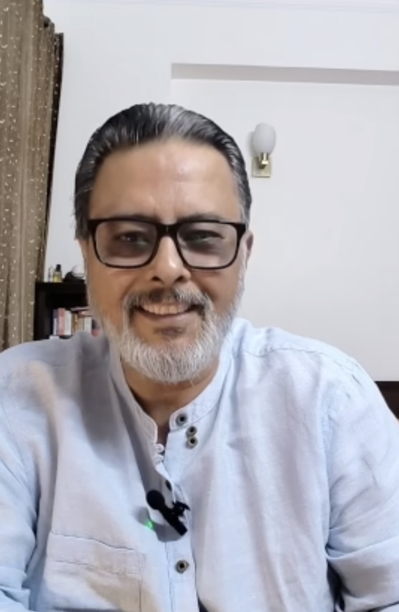
Nitin P Khanna
Alumnus IIT (ISM) Dhanbad (B.Tech) dan IMT Ghaziabad (MBA), dengan pengalaman lebih dari 30 tahun dalam peningkatan keterampilan, pengembangan tenaga kerja, dan kesiapan kerja.
Ia berpengalaman di bidang pembelajaran dan pengembangan serta ekosistem bisnis, dengan fokus menjembatani kesenjangan antara keterampilan dan pekerjaan. Di Bharat Rojgar Sewa, ia mendukung inisiatif peningkatan keterampilan agar kandidat lebih sesuai dengan kebutuhan industri.
Lihat profil LinkedIn →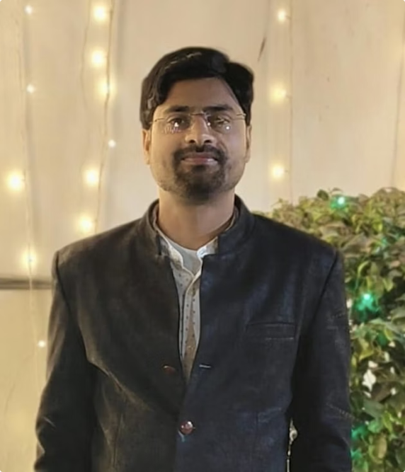
Yusuf Ansari
Yusuf Ansari adalah tenaga profesional kesehatan dengan pengalaman 10 tahun di sektor kesehatan. Ia berpengalaman merawat pasien selama pandemi COVID-19 dan bekerja di lingkungan layanan kesehatan yang menantang. Ia memiliki gelar sarjana di bidang Phytology serta pengalaman praktis dalam perawatan pasien dan operasional kesehatan.
Ia membawa kecerdasan emosional, kesabaran, empati, dan keterampilan interpersonal yang kuat ke dalam tim.
Mulai hari ini
Temukan pekerjaan berikutnya atau kandidat yang tepat di India.
📱 Kirim pesan melalui WhatsApp